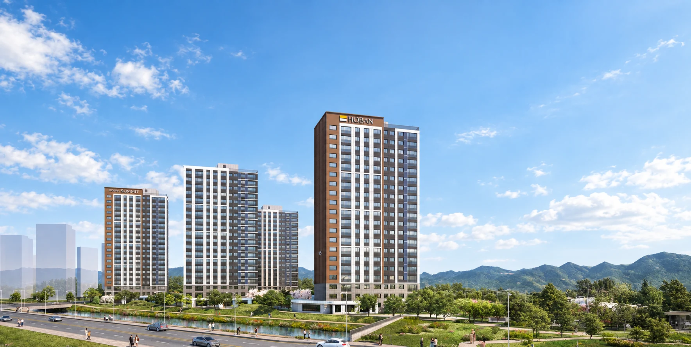

기존 시설의 이용 경로
장을 보는 곳·병원·주말 목적지를 정한 뒤 실제 출입구를 기준으로 경로를 확인해 보세요.
HOBAN SUMMIT · CHEOMDAN 3
FIRST PAYMENT
1차 계약금모집공고 기준, 전체 계약금은 분양가의 5%입니다.
궁금한 주택형이나 방문 일정을 모하모아 담당자에게 문의하세요.
2026.06.05 모집공고의 납부 조건입니다. 현재 계약 조건과 남아 있는 동·호수는 상담 시 확인해 주세요.
통화가 어려우신가요? ‘방문예약’에서 연락처와 방문을 원하는 날짜·시간을 남겨 주세요.

집과 함께 살펴볼 생활권
호반써밋 첨단3지구 공식 입지 지도에는 생활시설과 예정 시설이 함께 표시돼 있습니다. 롯데마트 첨단점·첨단종합병원·국립광주과학관의 위치를 볼 수 있지만, 단지 주변 학교 부지와 도시철도 2호선 2단계·연결도로는 계획 안내입니다. 지도만으로 개교·개통 시점이나 배정학교, 단지에서의 도보 거리를 확정할 수는 없습니다.
확인일 2026.10.07 · 공식 입지 지도·계획 기준 ↗
| 구분 | 시설·계획 | 확인할 내용 |
|---|---|---|
| 생활시설 | 롯데마트 첨단점 · 첨단종합병원 · 국립광주과학관 | 이용 경로 · 운영시간 · 휴무일 |
| 교육 계획 | 단지 주변 초·중·고 · 유치원 부지 | 개교 시기 · 실제 배정학교 |
| 교통 계획 | 도시철도 2호선 2단계 · 상무지구~첨단산단 도로 · 진입도로 | 최신 일정 · 단지 출입구 기준 실제 경로 |
| 산업 생활권 | 광주첨단과학국가산업단지 · 국가AI데이터센터 등 지도상 위치 | 본인 직장까지 출퇴근 경로 |
첨단역·지스트역·신용역은 지도에 쓰인 가칭입니다. 지도만으로 도보권이나 트리플 역세권, 학교 배정을 판단하지 않습니다.
확인일 2026.10.07 · 입지 지도·계획의 기준 시점 ↗
마트와 병원, 과학관처럼 이용할 시설을 먼저 정한 뒤 단지 출입구에서의 실제 이동 경로를 확인해 보세요. 지도에서 가까워 보이는 위치와 실제 도로나 보행로를 따라 이동하는 거리는 다를 수 있습니다.
자녀의 학교가 중요하다면 예정 학교 부지와 실제 배정학교를 구분해 알아보세요. 도시철도와 연결도로도 지도에 적힌 연도를 확정 일정으로 보기보다 해당 기관의 최신 진행 상황을 확인하시는 편이 좋습니다. 이 페이지는 현재 시설의 위치와 계획을 나눠 비교할 수 있도록 정리했습니다.
공식 입지 지도에서 생활에 필요한 시설을 찾아보세요.
공식 지도에는 롯데마트첨단점, 첨단종합병원, 국립광주과학관, GIST와 광주과학고 등이 안내돼 있습니다. 단지 주변 학교와 도시철도 2호선, 연결도로는 계획으로 표시된 항목을 구분해 확인하세요. 지도만으로 도보 시간이나 학교 배정을 판단할 수는 없습니다.
공식 자료 확인일 2026.10.07 · 공식 입지 지도·계획 기준 ↗

장을 보는 곳·병원·주말 목적지를 정한 뒤 실제 출입구를 기준으로 경로를 확인해 보세요.
계획 학교의 개교·배정과 철도·도로 사업의 일정은 관계기관의 최신 안내를 확인해야 합니다.
공식 자료 확인일 2026.10.07 · 공식 입지 지도·계획 기준 ↗
지역명을 검색하셨다면 먼저 관심 블록의 행정구역을 확인해 보세요.
호반써밋 첨단3지구의 A7 사업지는 광주 북구 월출동, A8 사업지는 전남 장성군 진원면입니다. 같은 사업의 서로 다른 블록이며 주택형도 A7 84A·84B, A8 117A·117B·135형으로 나뉩니다.
월출동은 A7 사업지를 설명하는 지역명입니다. A8까지 광주 북구에 있다고 안내하면 실제 행정구역과 다릅니다.
진원면은 A8 사업지를 설명합니다. 방문할 모델하우스 주소는 별도의 광주 서구 마륵동입니다.
| 구분 | A7블록 | A8블록 |
|---|---|---|
| 사업지 | 광주 북구 월출동 | 전남 장성군 진원면 |
| 공급 규모 | 356세대 · 5개동 | 449세대 · 6개동 |
| 주택형 | 84A · 84B | 117A · 117B · 135 |
| 규모 | 지하 1층~지상 20층 | 지하 1층~지상 18~20층 |
| 입주 예정 | 2028년 9월 | 2028년 10월 |
공고의 전체 공급 규모이며 현재 잔여 물량과 다릅니다. 정확한 입주일은 추후 안내됩니다. 시행사는 첨단678피에프브이 주식회사, 시공사는 (주)호반건설입니다.
지도 중심점보다 실제 드나들 출입구를 기준으로 살펴보세요.
공식 A8 배치도에는 북서쪽과 남서쪽 방향의 출입구가 안내돼 있습니다. 관심 동에서 출입구까지의 단지 내부 경로와 외부 목적지까지의 경로를 나눠 확인하면 생활 동선을 비교하기 좋습니다.
공식 자료 확인일 2026.10.07 · 공식 단지·동호수배치도 ↗


차량 출입구 위치가 보행 경로와 같다고 볼 수는 없습니다. 배치도의 표기와 실제 접근 경로를 확인하세요.
배치도만으로 신호등 대기·경사·혼잡이나 실제 소요 시간을 판단하지 않습니다.
공식 자료 확인일 2026.10.07 · 공식 단지·동호수배치도 ↗
밖에서 보내는 시간과 집 안에 필요한 공간을 함께 생각해 보세요.
같은 생활권이라도 호반써밋 첨단3지구의 다섯 주택형은 면적과 배치가 다릅니다. A7의 84A·84B, A8의 117A·117B·135 도면을 보면서 가족 수, 재택 공간, 수납과 가구 배치를 함께 비교해 보세요.
공식 자료 확인일 2026.10.07 · A7 공식 평면도 ↗ · A8 공식 평면도 ↗

| 블록·주택형 | 전용면적 | 공급면적 |
|---|---|---|
| A7BL · 84A형 | 84.9286㎡ | 115.6207㎡ |
| A7BL · 84B형 | 84.9682㎡ | 115.6560㎡ |
| A8BL · 117A형 | 117.8549㎡ | 146.3902㎡ |
| A8BL · 117B형 | 117.9486㎡ | 146.7807㎡ |
| A8BL · 135형 | 135.9583㎡ | 168.2330㎡ |
학교 배정은 교육청 안내로 확인하고 공부할 방의 위치와 가구 설치는 도면에서 별도로 확인하세요.
단지 주변 시설이 많다는 사실과 세대 내부 사용성이 좋은지는 다른 기준입니다. 두 항목을 나눠 비교해 보세요.
공식 자료 확인일 2026.10.07 · A7 공식 평면도 ↗ · A8 공식 평면도 ↗
사업지 지도와 견본주택 길찾기는 서로 다릅니다.
모델하우스 방문은 광주 서구 마륵동 164-11로 안내됩니다. 월출동 A7·진원면 A8 사업지 지도는 집이 들어설 위치를 설명하는 자료이므로 방문 목적지와 구분해 주세요.
공식 자료 확인일 2026.10.07 · 공식 모델하우스 위치·운영 안내 ↗
공식 안내는 상무역 2번 출구에서 약 200m입니다. 출발 전 현재 지도에서 접근 경로를 확인하세요.
출퇴근 목적지와 통학·쇼핑에서 중요한 조건을 정리해 오시면 블록별 위치를 함께 비교하기 좋습니다.
공식 안내: 오전 10시~오후 5시 30분 · 상무역 2번 출구에서 약 200m
모하모아 담당자와 방문 시간을 확인한 뒤 방문해 주세요.
전화로 문의하기 ↗이 페이지의 상담은 모하모아 담당자에게 연결됩니다. 시행사·시공사 공식 상담 창구와는 다릅니다.
공식 자료 확인일 2026.10.07 · 공식 모델하우스 위치·운영 안내 ↗
공고의 가격 조건으로 예산을 확인하세요.
계산기는 2026년 6월 5일 모집공고의 주택형·층별 공급금액을 사용합니다. 철도·도로·학교 계획을 이유로 금액을 올리거나 투자수익을 계산하지 않습니다. 미래 개발의 가치 판단과 실제 납부할 공급대금은 구분해야 합니다.
공식 자료 확인일 2026.10.07 · A7 공급금액·납부 조건 ↗ · A8 공급금액·납부 조건 ↗
| 주택형 | 최저~최고 공급금액 |
|---|---|
| A7BL · 84A형 | 49,400~54,300만원 |
| A7BL · 84B형 | 48,900~53,700만원 |
| A8BL · 117A형 | 62,700~68,900만원 |
| A8BL · 117B형 | 62,500~68,700만원 |
| A8BL · 135형 | 71,600~78,700만원 |
공급금액·확장·옵션·취득 비용을 구분하고 계약할 세대의 조건을 확인하세요.
가족의 출퇴근·통학 경로에 따른 교통비는 개인 상황에 맞춰 따로 검토하세요.
입지를 살펴본 뒤 관심 타입·층을 선택해 예산을 계산하세요. 미래 시세나 개발 이익을 가정해 공급금액을 바꾸지는 않습니다.
A7BL · 84A형 · 1층 · 2026.06.05 공고의 공급금액입니다.
발코니 확장, 유상옵션, 취득 관련 비용은 분양가에 포함되지 않습니다. 입력하지 않은 금액은 0원으로 계산합니다.
모집공고 기준 계약금 5%·중도금 60%·잔금 35%입니다. 아래 금액은 선택한 주택형과 층에 따라 바뀝니다.
예상 대출금은 필요한 현금을 계산하는 데만 사용합니다. 중도금 납부 시점별 대출 실행과 이자, 대출 가능 여부는 따로 확인해 주세요.
생활 경로와 별개로 계약할 때 필요한 확장·옵션 비용을 입력하세요. 미확인 교통비나 관리비는 자동으로 합산하지 않습니다.
입력한 비용은 총 필요 금액에 더해집니다. 취득세율과 중과·감면 여부는 이 계산기에서 판단하지 않습니다.
아래 가격은 모집공고에 나온 주택형별 최저·최고 분양가입니다. 현재 남아 있는 세대의 가격이나 판매 조건과는 다를 수 있습니다.
| 주택형 | 공급금액 범위 | 근거 |
|---|---|---|
| A7BL 84A형 | 494,000,000~543,000,000원 | 공고 8쪽 ↗ |
| A7BL 84B형 | 489,000,000~537,000,000원 | 공고 8쪽 ↗ |
| A8BL 117A형 | 627,000,000~689,000,000원 | 공고 12쪽 ↗ |
| A8BL 117B형 | 625,000,000~687,000,000원 | 공고 12쪽 ↗ |
| A8BL 135형 | 716,000,000~787,000,000원 | 공고 12쪽 ↗ |
총 필요 금액 = 공급금액 + 입력한 추가 비용. 자기자금 = 총 필요 금액 − 예상 대출금. 부족분 = 자기자금 − 보유 현금(최소 0원). 확인일 2026.10.07.
지도에 있는 시설과 계획을 구분해 답합니다.
호반써밋 첨단3지구 공식 입지 지도에는 생활시설과 예정 시설이 함께 표시돼 있습니다. 롯데마트 첨단점·첨단종합병원·국립광주과학관의 위치를 볼 수 있지만, 단지 주변 학교 부지와 도시철도 2호선 2단계·연결도로는 계획 안내입니다. 지도만으로 개교·개통 시점이나 배정학교, 단지에서의 도보 거리를 확정할 수는 없습니다.
공식 자료 확인일 2026.10.07 · 관련 공식 자료 ↗
공식 지도에 역 계획이 표시돼 있다는 이유만으로 트리플 역세권이라고 단정할 수 없습니다. 각 역의 사업 상태, 실제 거리와 보행 경로를 확인한 뒤 표현해야 합니다.
공식 자료 확인일 2026.10.07 · 관련 공식 자료 ↗
아닙니다. 계획 학교의 표시와 실제 개교 일정·통학구역·배정은 별개입니다. 입주 시점에 적용될 교육청 안내를 확인해야 합니다.
공식 자료 확인일 2026.10.07 · 관련 공식 자료 ↗
국립광주과학관은 공식 입지 지도에 안내된 외부 시설이며 단지 내부 커뮤니티가 아닙니다. 실제 이동 경로와 운영은 해당 시설 안내로 확인하세요.
공식 자료 확인일 2026.10.07 · 관련 공식 자료 ↗
이 페이지는 공식 입지 자료에 안내된 계획을 소개합니다. 현재 개통·운영 여부를 이 지도만으로 확정하지 않으며 최신 교통기관 안내를 확인해야 합니다.
공식 자료 확인일 2026.10.07 · 관련 공식 자료 ↗
SOURCES & UPDATE
확인일 2026.10.07 · 공고 기준 2026.06.05. 모하모아가 공식 자료를 바탕으로 정리한 안내입니다. 현재 남아 있는 동·호수와 계약 조건은 상담 시 다시 확인해 주세요. 공식 자료가 변경되면 가격표와 안내도 수정합니다.